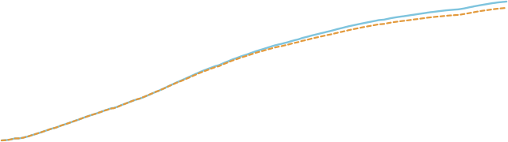
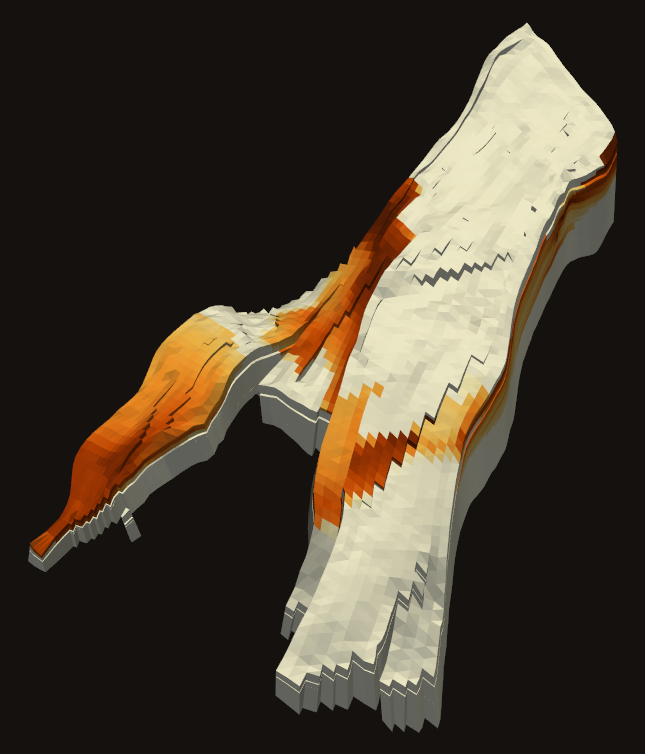
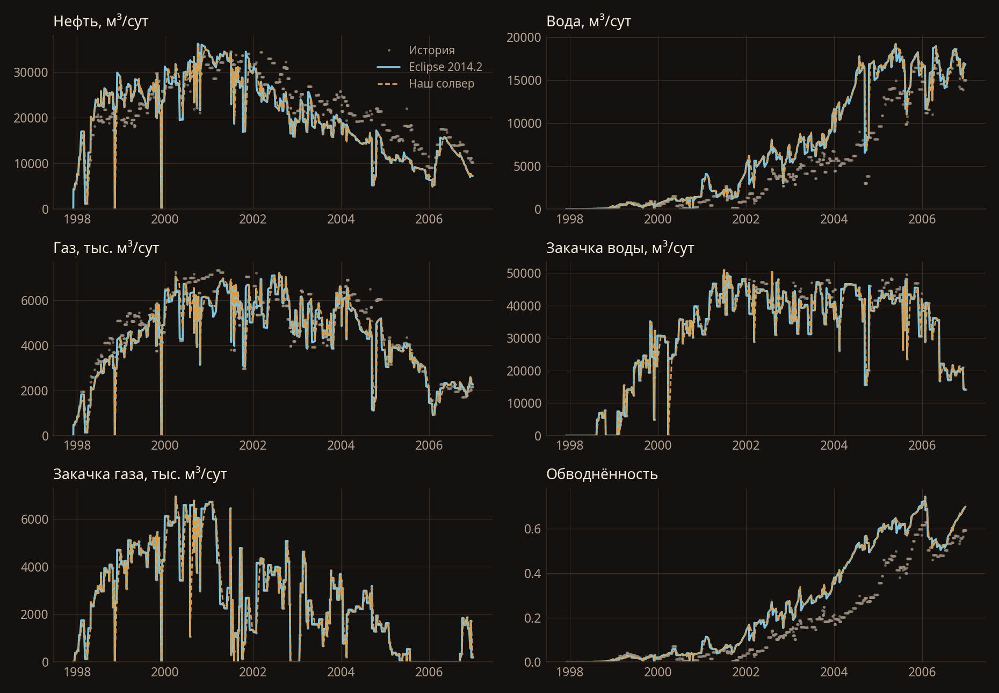
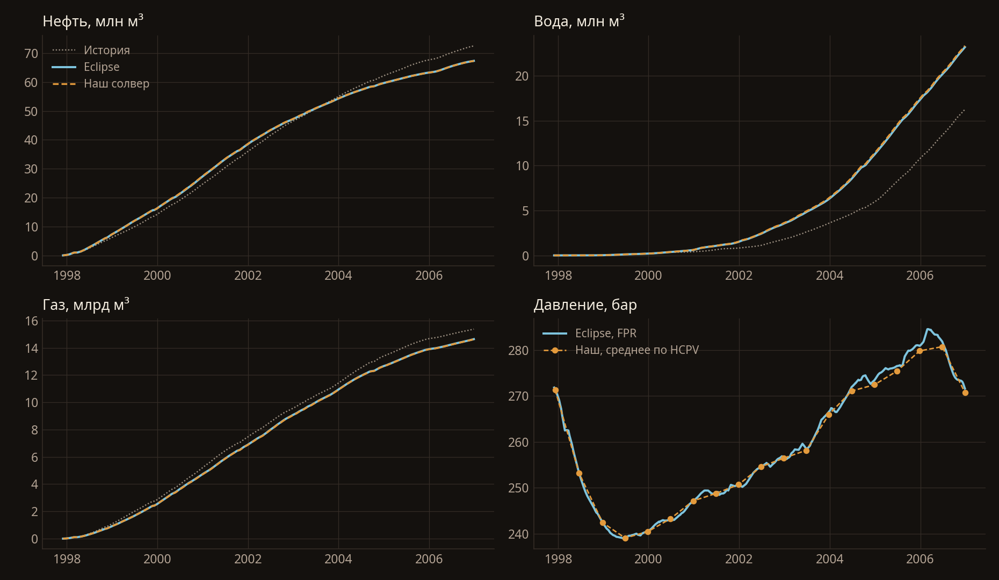
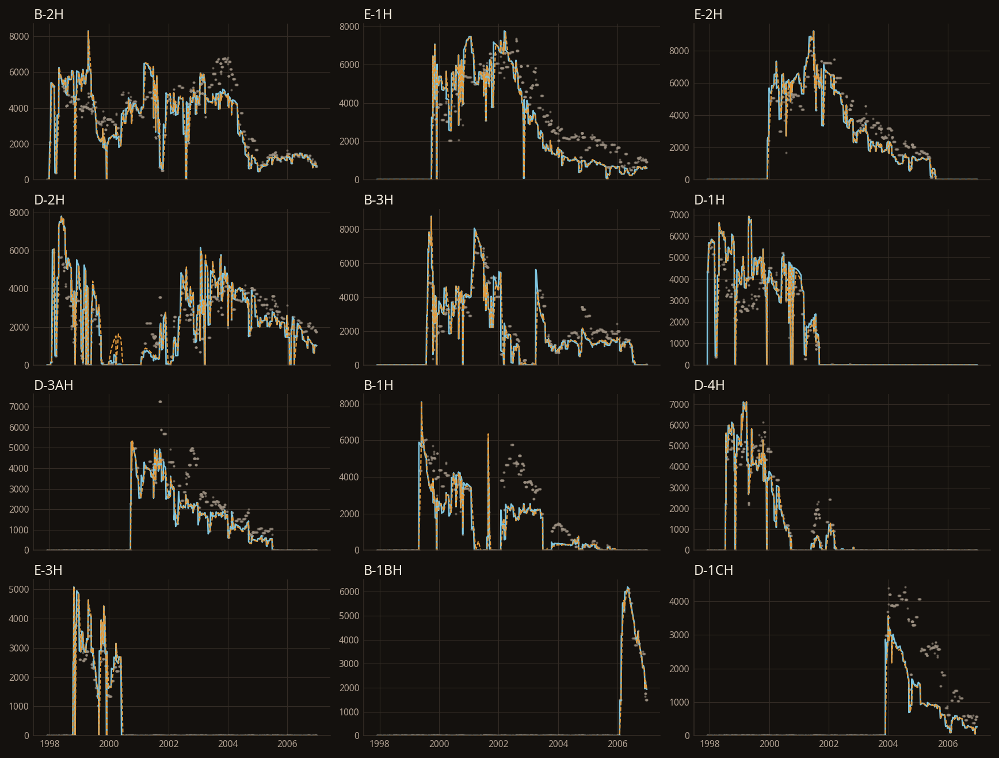
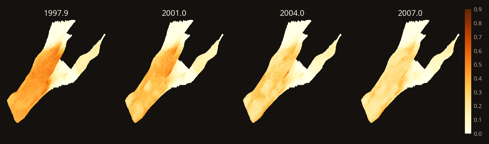
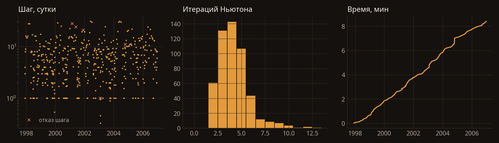

эксперимент · norne · eclipse 2014.2
Norne целиком.
Девять лет истории.
Открытая модель Equinor из Норвежского моря: 44 431 активная ячейка, 61 разлом, жирный газ, 36 скважин по реальному расписанию. Тот же DATA-файл, что считал Eclipse 2014.2, без правок.


01 — постановка и итог
Norne, 1997–2006
Norne — открытая модель Equinor, Северное море. Сетка 46×112×22, история с ноября 1997 по декабрь 2006, 3312 суток. Добыча нефти, воды и газа, закачка воды и газа, 36 скважин, реальное расписание, включая остановки и смену режима.
Считали тот же deck, что Eclipse 2014.2. Сравнивали векторы SUMMARY в наши отчётные даты. Серые точки на графиках — исторические замеры из модели: это то, за чем следует управление скважин, а не второй симулятор. Совпадать мы должны с голубой линией.
Накопленная нефть лежит на Eclipse все девять лет: по годам расхождение от −0,04% до +0,52%. К концу нефти меньше на 0,04%, воды больше на 0,6%, газа меньше на 0,06%. Закачка газа совпала полностью, закачка воды — до 0,17%. OPM Flow на этом же deck даёт −0,21%, +1,4% и −0,44%.
Среднее по времени |наш − Eclipse| / |Eclipse|: дебит нефти 0,65%, воды 1,1%, газа 0,7%, закачки воды 0,06%, закачка газа меньше 0,001%. Оранжевый пунктир — наш солвер, голубая линия — Eclipse 2014.2.


Прогон 25 октября 2026: 2106 секунд, AMD Ryzen 9 9900X и RTX 3090 Ti, PyTorch 2.7, float64. Повторить: scripts/run_norne.py, порядок — в документации.
02 — скважины
Двенадцать крупнейших
Накопленная нефть по скважинам: у 11 из 12 расхождение меньше 2%, от −0,0% на B-3H и E-3H до −2,2% на D-1CH. Форма дебита, моменты запуска и остановки совпадают.
| скважина | наш, млн м³ | Eclipse | разница |
|---|---|---|---|
| B-2H | 10,83 | 10,82 | +0,1% |
| E-1H | 8,02 | 8,04 | −0,3% |
| E-2H | 7,81 | 7,82 | −0,1% |
| D-2H | 7,67 | 7,53 | +1,8% |
| B-3H | 6,11 | 6,11 | −0,0% |
| D-1H | 5,45 | 5,50 | −1,0% |
| D-3AH | 3,62 | 3,66 | −1,1% |
| B-1H | 3,59 | 3,58 | +0,1% |
| D-4H | 3,18 | 3,17 | +0,3% |
| E-3H | 1,69 | 1,69 | −0,0% |
| B-1BH | 1,41 | 1,42 | −0,8% |
| D-1CH | 1,29 | 1,32 | −2,2% |

03 — пласт
Как выглядит расчёт
Это поля нашего солвера, не карта ошибки против Eclipse. Геометрия — столбы corner-point из EGRID. На картах насыщенность усреднена по разрезу с весом порового объёма. В объёме вертикаль растянута в пять раз, иначе пласт — тонкая корка.

04 — решатель
Девять минут на девять лет
527 шагов по времени, 2193 итерации Ньютона, в среднем 4,2 на шаг. Шаг по времени выбирается как в OPM Flow: PID-регулятор по изменению решения и целевое число итераций. Пять шагов не сошлись и были разрезаны — ни один не дошёл до минимального. Иерархия AMG строится и дальше только обновляется. Для сравнения: Eclipse 2014.2 считал этот deck 17 минут (время из файла PRT), OPM Flow на той же машине — 2,7 минуты на двух потоках CPU. Начинали мы с 35 минут; ускорение вчетверо дали активные ячейки, CUDA-графы и шаг по времени как в OPM — без потери точности против Eclipse. Допуск линейного решателя — неточный Ньютон: пока невязка большая, систему не вылизывают до машинного нуля.
На миллионе ячеек двухфазный стресс-тест проходит на одной 24 ГБ карте. Norne меньше, но жёстче: жирный газ, разломы, история, скважины, которые открываются и закрываются. В матрице только активные ячейки — 44 тысячи из 113 тысяч ячеек сетки.

05 — чего в этом счёте нет
Границы, как они есть
- Отдельные скважиныМесторождение целиком сходится с Eclipse до долей процента, но по скважинам остаются выбросы: вода на E-4AH больше на 17%, на B-1H меньше на 15%, на D-4AH меньше на 11%. В объёмах это немного: от тысячи до 70 тысяч м³ при 23 млн м³ воды по месторождению.
- Устье и VFPНет таблиц VFP и ограничения по устьевому давлению. Для сверки с историей Norne они не нужны: там VFP не задана и забой ограничен 1 атм, но для прогнозов они понадобятся.
- Трассеры, WECON, сетиTRACER, экономические ограничения скважин и поверхностная сеть не считаются. Гистерезис ОФП — только модель Карлсона. VAPPARS с VAP2 ≠ 0 не поддерживается.